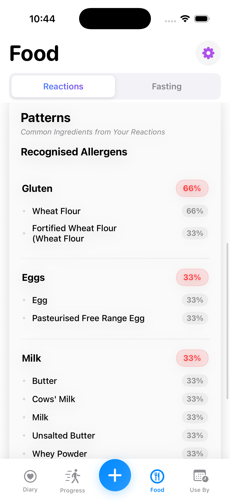
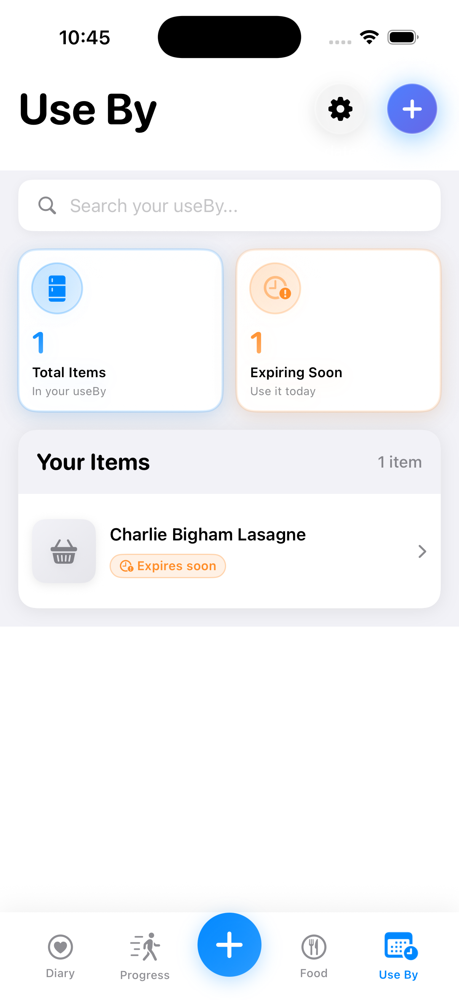

Core Features
Powerful tools, beautifully simple
Everything you need to take control of your nutrition.
üߨ Reactions Tracker
Find your personal patterns. No guesses. No generic advice. Just your data revealing your patterns.
- Log how you feel after eating
- Track timing and severity
- See which foods appear before reactions
- Build a picture of what works for your body

üìä Food Diary & Macro Tracking
Daily calories, protein, carbs, fats, and serving-size adjustments — ideal for low-carb or high-protein diets.
- Real-time calorie and macro tracking
- Personalised daily goals
- Weekly nutrient coverage insights
- Quick meal logging
üîç Nutrient & Ingredient Breakdown
See ingredients, micronutrients, additive details and processing scores instantly.
- Complete nutritional breakdown
- Processing and sugar scores (A+ to F)
- Additive safety information
- Serving size calculator

üìÖ Expiry & Opened-Date Reminders
Log opened food and get reminders before it spoils. Never wonder "is this still good?" again.
- Track foods once opened
- Custom expiry reminders
- "Use it today" alerts
- Reduce food waste and stay safe
